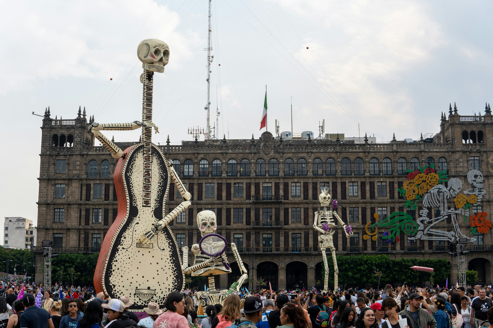
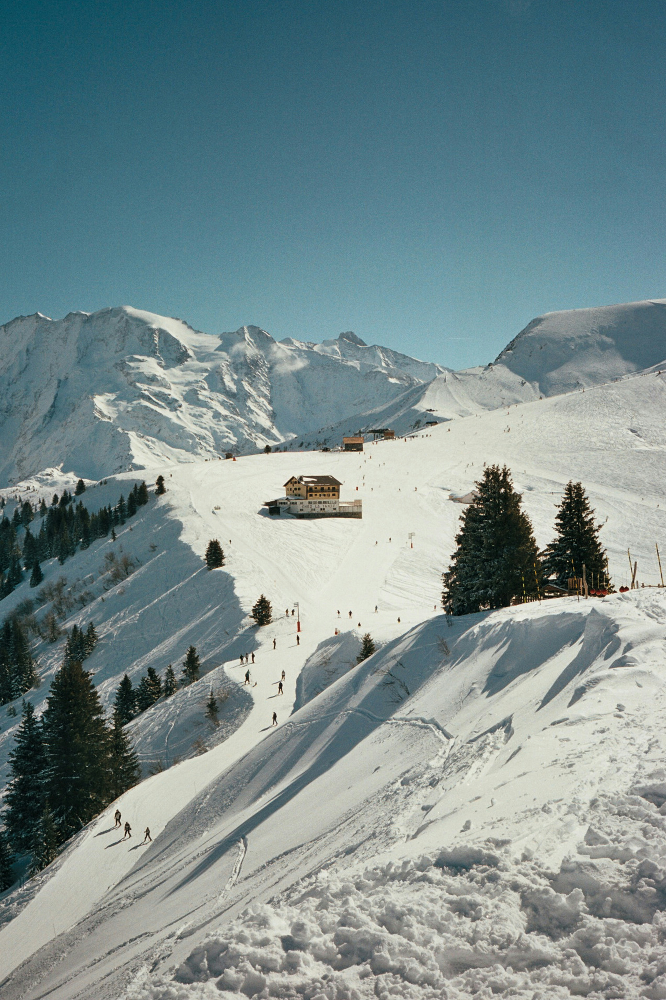
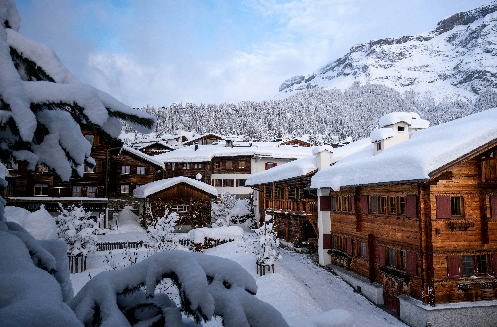
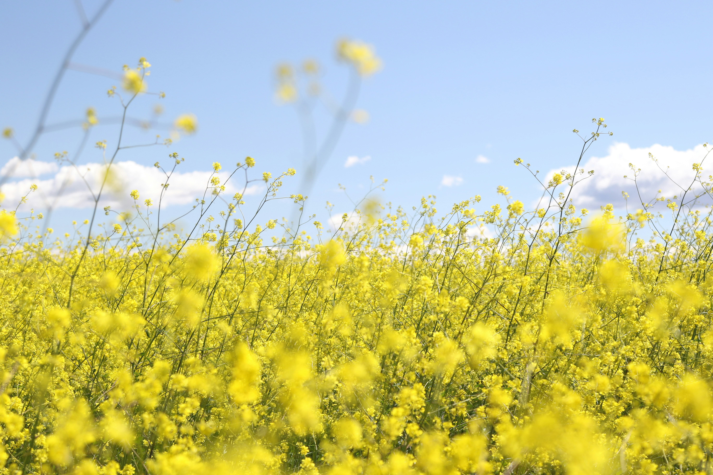
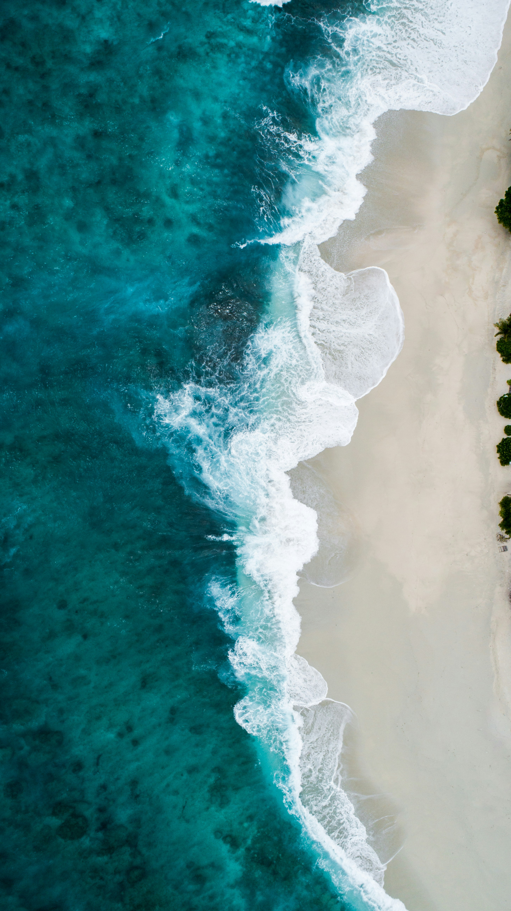
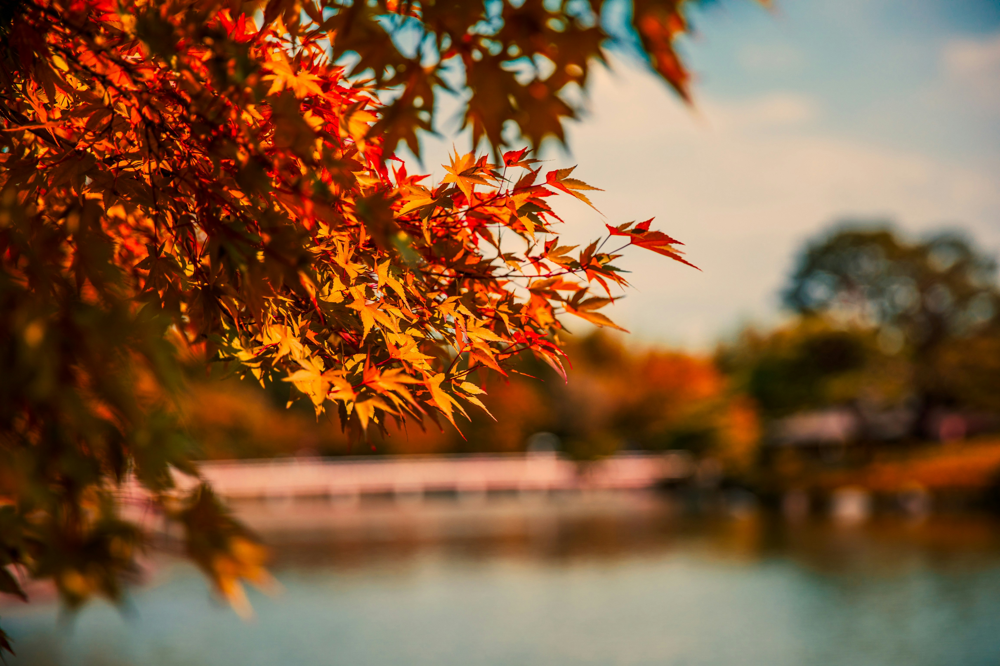
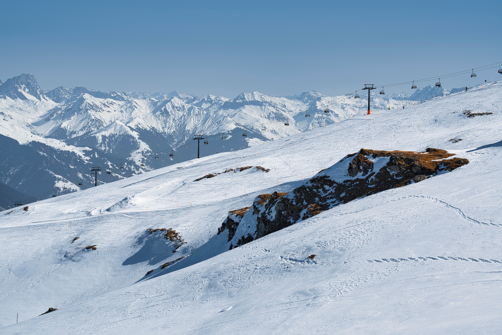

第一次，慢慢來
想試試看滑雪，也想有時間熟悉裝備與雪地。把學習放進行程，不急著一開始就滑得很遠。
先確認教學語言、入門課程、裝備租借與初學區資訊。住宿和集合地點之間的移動方式，也值得一起考慮。
02 / THE REASON WE GO
一場雪、一片海、一口想念的味道，
或是一場等待已久的演出。
WHY WE GO 收集讓人願意出發的理由。
從你喜歡的事開始，發現原本沒想過的風景。
03 / FIND YOUR SOMETHING
選一個心動的方向，一起探索。
TAIWAN / 日常的味道。
04 / 城市的味道
如果為了一碗南投意麵出發，那一天就不必從景點清單開始。找間小店坐下來，吃完再沿著街道散步，看看市場、老屋，以及人們生活的樣子。
探索台灣小吃
一個小提案：
留一餐給最想吃的店，也留一點胃口給路上的偶然發現。
05 / INTO THE BLUE
水面之下，熟悉的喧鬧漸漸遠去。
留下呼吸、光線，和第一次看見這個世界的好奇。
先想想你想體驗的是岸邊觀察、浮潛，還是水肺潛水，再向合格業者了解課程與參與條件。也可以先安排一天海邊生活， 不必急著一次挑戰所有事情。
為音樂而來。

MEXICO / DÍA DE MUERTOS
07 / 文化與節慶
服飾、音樂與街上的色彩，都可能連著一段地方故事。
出發前先了解節慶的意義，到了現場，為觀察與聆聽多留一點時間。
帶著好奇，也帶著尊重。
I was there.
那片風景裡，也有我的足跡。
09 / YOUR KIND OF SNOW DAYS
滑雪不只有一種玩法，
找到適合自己的節奏，享受雪地時光。
想試試看滑雪，也想有時間熟悉裝備與雪地。把學習放進行程，不急著一開始就滑得很遠。
已經有滑行經驗，想把更多時間留給雪道。比起排滿周邊景點，更期待每天再次上山。
想感受雪山，也想好好吃飯、散步和休息。滑雪占一部分，剩下的時間留給山裡日常。
10 / A DAY IN THE MOUNTAINS
想像一天住在雪山附近的生活。
這份時間軸是靈感，可以依課程、天氣與自己的步調調整。

出門前確認當天雪場公告與天氣，準備裝備，再決定今天想怎麼安排。
參加預約的課程，或從適合自己程度的雪道開始，慢慢找到今天的節奏。
脫下手套、坐下吃飯， 讓身體暖起來。窗外的雪景，也值得多看幾眼。
依體力與現場狀況做決定。今天的收穫，不一定需要用滑了幾趟來計算。
整理裝備、吃一頓晚餐，聊聊今天最難忘的瞬間。然後，好好睡一覺。
11 / BEFORE YOUR FIRST RUN
不需要一開始就懂所有裝備和術語。
先了解幾個會影響安排的問題。
可以先向雪場或滑雪學校了解入門課程，確認教學語言、集合地點與課程內容。安排上留出領裝備和熟悉環境的時間。
先查詢目的地提供哪些租借項目，再整理需要自行準備的衣物和配件。不同業者的套組內容可能不同，預訂前逐項確認會比較清楚。
可以把住宿周邊的餐飲、散步、景觀設施與其他活動一起納入考量。各自安排一部分時間，再約好一起吃飯，也是一種玩法。
可以依課程安排與體力決定，中間也能留一天休息或探索附近。預訂雪票與課程時，記得確認使用日期及更改規則。
實際課程、租借內容與設施開放狀況， 請以選定雪場及業者公告為準。

12 / BEYOND THE SLOPES
選住宿時，也想想自己期待的夜晚。是熱鬧的小鎮，還是安靜的窗邊？
把目光從雪道移到餐桌，留時間給當地料理和一天的閒聊。
找間咖啡店、走走開放的步道，或留在住宿休息，都可以是這幾天的一部分。
13 / THROUGH THE SEASONS
點開四季，看看另一種出發的可能。

為一場花季、一條步道，安排一段慢慢走的時間。從戶外重新認識一座城市。

想去海邊，也想聽一場戶外演出。留一個傍晚，給海風、夕陽和喜歡的聲音。

沿著變色的街道散步，走累了就找間小店坐下。讓一天跟著眼前的風景展開。

為期待已久的一場雪，住進山裡幾天。在冷空氣與熱飲之間過日子。
15 / WHY WE GO
有些嚮往，不該只停留在想像裡。